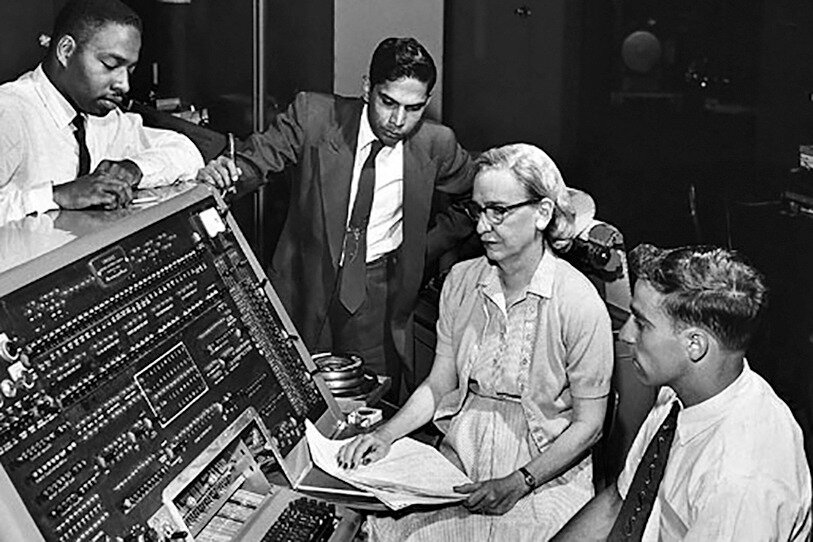
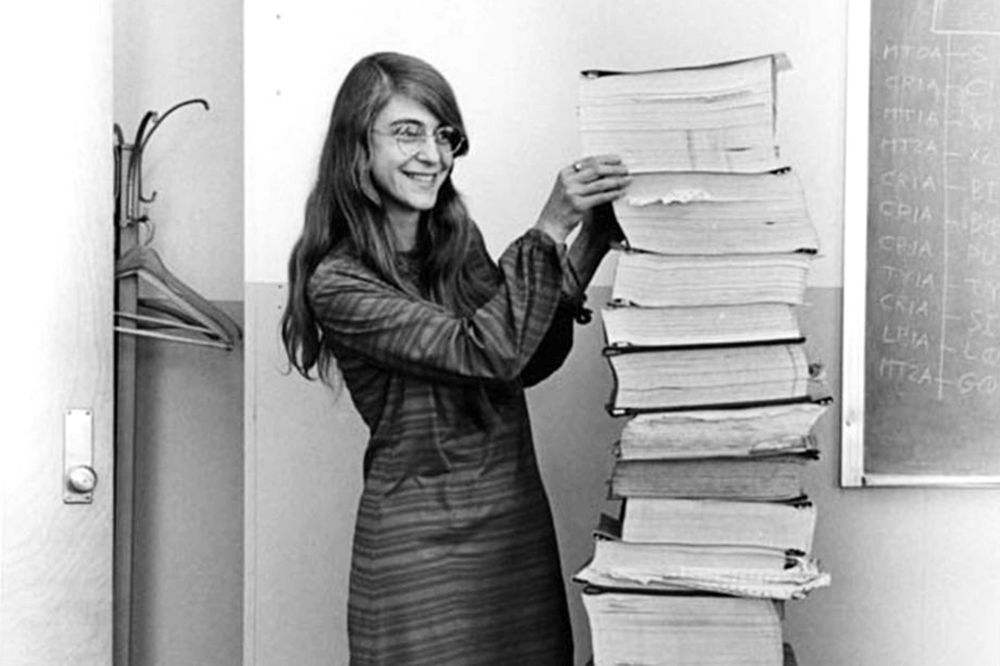

Ada Lovelace: la primera programadora de la historia

Augusta Ada King, conocida como Ada Lovelace, nació en 1815 en Londres, Inglaterra. Fue una matemática y
escritora que trabajó junto al científico Charles Babbage, quien diseñó una máquina conocida como la
"máquina analítica", precursora de las computadoras modernas.
En 1843, Ada tradujo un artículo del matemático italiano Luigi Menabrea sobre esta máquina, y le añadió
extensas notas propias. En una de ellas, describió un algoritmo pensado para ser procesado por la máquina
analítica, lo que la convierte en la primera persona en escribir un programa informático de la historia.
Además de eso, Ada imaginó que las computadoras podrían hacer mucho más que cálculos: podrían crear música o
arte si se les daban las instrucciones adecuadas. Esta visión adelantada al siglo XIX anticipó el potencial
creativo de la tecnología moderna.
Hoy se la reconoce como un ícono de la historia de la informática y un símbolo del papel de las mujeres en
la ciencia. En su honor, se celebra cada octubre el Día de Ada Lovelace, dedicado a visibilizar el trabajo
de las mujeres en STEM (ciencia, tecnología, ingeniería y matemáticas).
Grace Hopper: la pionera del lenguaje de programación

Grace Hopper fue una científica computacional y contralmirante de la Marina de los Estados Unidos. Nacida en
1906, es conocida por desarrollar el primer compilador para un lenguaje de programación, una herramienta que
traduce el código escrito por humanos a lenguaje que las computadoras pueden entender.
Gracias a su trabajo, se creó COBOL, uno de los primeros lenguajes de programación de alto nivel, usado
especialmente en negocios y sistemas bancarios. Grace también fue famosa por popularizar el término
"debuggear", luego de encontrar literalmente un insecto (bug) en un computador.
Su legado transformó la informática y facilitó el acceso a la programación para más personas. Fue una
defensora del pensamiento innovador y del cambio, incluso en ambientes conservadores como el militar.
Margaret Hamilton: la ingeniera del Apolo 11

Margaret Hamilton fue una ingeniera de software que lideró el equipo de desarrollo del software de navegación a
bordo del Apolo 11, la misión que llevó al primer ser humano a la Luna en 1969.
Su código permitió que la nave pudiera recuperarse de errores en tiempo real y seguir funcionando durante el
alunizaje, evitando una posible cancelación de la misión. Gracias a su trabajo, el equipo del Apolo pudo
aterrizar con seguridad en la superficie lunar.
Hamilton acuñó el término "ingeniería de software" y ayudó a consolidar esta disciplina como una parte esencial
en el desarrollo tecnológico. Fue reconocida con la Medalla Presidencial de la Libertad en 2016.